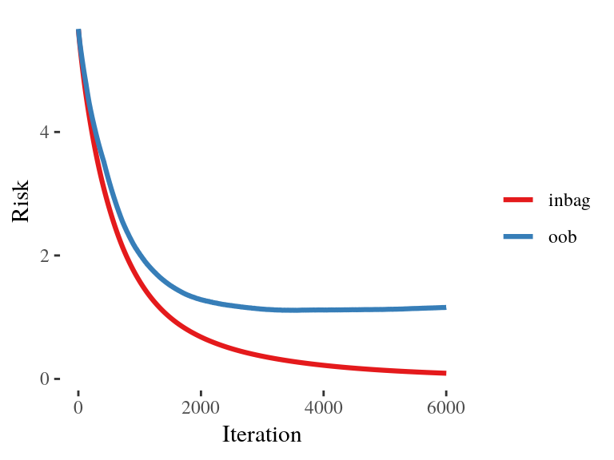

compboost
Fast and Flexible Component-Wise Boosting
Daniel Schalk
November 29, 2018
Use-Case
We own a small booth at the Christmas market that sells mulled wine.
As we are very interested in our customers’ health, we only sell to customers who we expect to drink less than 15 liters per season.
To estimate how much a customer drinks, we have collected data from 200 customers in recent years.
These data include mulled wine consumption (in liter and cups), age, sex, country of origin, weight, body size, and 200 characteristics gained from app usage (that have absolutely no influence).
| mw_consumption | mw_consumption_cups | gender | country | age | weight | height | app_usage1 |
|---|---|---|---|---|---|---|---|
| 12.6 | 42 | f | Seychelles | 21 | 119.25 | 157.9 | 0.1680 |
| 2.1 | 7 | f | Poland | 57 | 67.72 | 157.5 | 0.8075 |
| 12.6 | 42 | m | Seychelles | 25 | 65.54 | 181.6 | 0.3849 |
| 9.3 | 31 | f | Germany | 68 | 84.81 | 195.9 | 0.3277 |
| 4.8 | 16 | m | Ireland | 39 | 85.30 | 163.9 | 0.6021 |
| 9.3 | 31 | f | Germany | 19 | 102.75 | 173.8 | 0.6044 |
| 5.1 | 17 | f | Poland | 66 | 98.54 | 199.7 | 0.1246 |
| 7.5 | 25 | f | Seychelles | 62 | 108.21 | 198.1 | 0.2946 |
| 15.0 | 50 | m | Seychelles | 22 | 62.08 | 180.1 | 0.5776 |
| 8.4 | 28 | m | Germany | 52 | 75.42 | 170.0 | 0.6310 |
With these data we want to answer the following questions:
- Which of the customers’ characteristics are important to be able to determine the consumption?
- How does the effect of important features look like?
- How does the model behave on unseen data?
- Fit a linear model?
- Fit a linear model on each feature and build the ensemble?
- Fit a regularized linear model?
- Train a random forest?
Fit a linear model?
\(\rightarrow\) Not possible since \(p > n\).Fit a linear model on each feature and build the ensemble?
\(\rightarrow\) Possible, but how should we determine important effects?Fit a regularized linear model?
\(\rightarrow\) Possible, but with the linear model we get just linear effects.Train a random forest?
\(\rightarrow\) Possible, but we want to interpret the effects.
Component-Wise Boosting
The Idea of Component-Wise Boosting

Why Component-Wise Boosting?
Inherent (unbiased) feature selection.
Resulting model is sparse since important effects are selected first and therefore it is able to learn in high-dimensional feature spaces (\(p \gg n\)).
Parameters are updated iteratively. Therefore, the whole trace of how the model evolves is available.
About compboost
The compboost package is a fast and flexible framework for model-based boosting completely written in C++:
With
mboostas standard, we want to keep the modular principle of defining custom base-learner and losses.Completely written in
C++and exposed byRcppto obtain high performance and full memory control.RAPI is written inR6to provide convenient wrapper.Major parts of the
compboostfunctionality are unit tested againstmboostto ensure correctness.
Applying compboost to the Use-Case
Quick Start With Wrapper Functions
cboost = boostSplines(data = mulled_wine_data[,-2],
target = "mw_consumption", loss = LossQuadratic$new(),
learning.rate = 0.005, iterations = 6000, trace = 600)
## 1/6000 risk = 5.6
## 600/6000 risk = 2.5
## 1200/6000 risk = 1.3
## 1800/6000 risk = 0.8
## 2400/6000 risk = 0.51
## 3000/6000 risk = 0.34
## 3600/6000 risk = 0.24
## 4200/6000 risk = 0.17
## 4800/6000 risk = 0.12
## 5400/6000 risk = 0.087
## 6000/6000 risk = 0.064
##
##
## Train 6000 iterations in 8 Seconds.
## Final risk based on the train set: 0.064Effect Visualization

Inbag and OOB Behavior
To get an idea, how the model behaves on unseen data we use 75 % as training data and the other 25 % of the data to calculate the out of bag (OOB) risk:
Define Model and Base-Learner the “Object-Oriented Style”
cboost = Compboost$new(data = mulled_wine_data[idx_train,-2],
target = "mw_consumption", loss = LossQuadratic$new(),
learning.rate = 0.005)
target_vars = c("mw_consumption", "mw_consumption_cups")
for (feature_name in setdiff(names(mulled_wine_data), target_vars)) {
if (feature_name %in% c("gender", "country")) {
cboost$addBaselearner(feature = feature_name, id = "category",
bl.factory = BaselearnerPolynomial, intercept = FALSE)
} else {
cboost$addBaselearner(feature = feature_name, id = "spline",
bl.factory = BaselearnerPSpline, degree = 3, n.knots = 10)
}
}OOB Data
To track the OOB risk we have to prepare the new data so that compboost knows the new data sources:
Define Logger
cboost$addLogger(logger = LoggerOobRisk, logger.id = "oob_risk",
used.loss = LossQuadratic$new(), eps.for.break = 0,
oob.data = oob_data, oob.response = oob_response)
cboost$addLogger(logger = LoggerTime, logger.id = "microseconds",
max.time = 0, time.unit = "microseconds")
cboost$train(6000, trace = 1500)
## 1/6000 risk = 5.6 microseconds = 1 oob_risk = 5.7
## 1500/6000 risk = 0.99 microseconds = 2348546 oob_risk = 1.5
## 3000/6000 risk = 0.37 microseconds = 4687547 oob_risk = 1.1
## 4500/6000 risk = 0.17 microseconds = 7082161 oob_risk = 1.1
## 6000/6000 risk = 0.092 microseconds = 9418308 oob_risk = 1.2
##
##
## Train 6000 iterations in 9 Seconds.
## Final risk based on the train set: 0.092Extract Inbag and OOB Data
Visualization of Inbag and OOB Risk
oob_trace = logger_data[["oob_risk"]]
risk_data = data.frame(
risk = c(inbag_trace, oob_trace),
type = rep(c("inbag", "oob"), times = c(length(inbag_trace),
length(oob_trace))),
iter = c(seq_along(inbag_trace), seq_along(oob_trace))
)
ggplot(risk_data, aes(x = iter, y = risk, color = type)) + geom_line()
Set Model to a Specific Iteration
cboost$train(2200)
cboost
## Component-Wise Gradient Boosting
##
## Trained on mulled_wine_data[idx_train, -2] with target mw_consumption
## Number of base-learners: 210
## Learning rate: 0.005
## Iterations: 2200
## Offset: 6.65
##
## LossQuadratic Loss:
##
## Loss function: L(y,x) = 0.5 * (y - f(x))^2
##
## Feature Importance
Using Custom Losses - Defining a Loss
As customers do not buy the wine in liters but per cup, it might be better to use a Poisson loss to take the counting data into account. For that reason we define a custom loss:
lossPoi = function (truth, pred) {
return (-log(exp(pred)^truth * exp(-exp(pred)) / gamma(truth + 1)))
}
gradPoi = function (truth, pred) {
return (exp(pred) - truth)
}
constInitPoi = function (truth) {
return (log(mean.default(truth)))
}
# Define custom loss:
my_custom_loss = LossCustom$new(lossPoi, gradPoi, constInitPoi)Using Custom Losses - Using the Loss
cboost = boostSplines(data = mulled_wine_data[,-1],
target = "mw_consumption_cups", loss = my_custom_loss,
optimizer = OptimizerCoordinateDescent$new(),
learning.rate = 0.005, iterations = 500, trace = 100,
n.knots = 10, degree = 3)
## 1/500 risk = 5.3
## 100/500 risk = 3
## 200/500 risk = 2.7
## 300/500 risk = 2.6
## 400/500 risk = 2.6
## 500/500 risk = 2.5
##
##
## Train 500 iterations in 0 Seconds.
## Final risk based on the train set: 2.5Further Functionalities
Each logger can also be used as stopper, therefore we can use them for early stopping
In combination with the custom loss, we can use the OOB logger to track performance measures like the AUC (in binary classification)
Losses and base-learner can also be directly extended using
C++(seegetCustomCppExample())
From C++ to R
Rcpp
- Automated conversion between
RandC++data structures, such as vectors, matrices, or even whole classes - Seamless integration of Armadillo for linear algebra
- Complicated stuff like compilation, or again, the conversion between
RandC++are handled automatically
C++ to R Wrap Up of compboost

Challenges When Using C++ and Rcpp
- Saving object is not possible at the moment
- Memory managing is not easy \(\Rightarrow\) Segmentation folds or memory leaks may happen
- Exported API of classes is not very informative
- Debugging of
C++fromRcan be very annoying and time-consuming
What’s Next?
- Better selection process of base-learner
- Speed up the training by parallel computations
- Greater functionality:
- Functional data structures and loss functions
- Unbiased feature selection
- Effect decomposition into constant, linear, and non-linear
Thanks for your attention!


Actively developed on GitHub:
Project page:
Credits
Slides were created with: